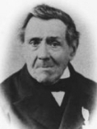
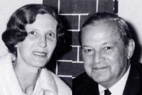
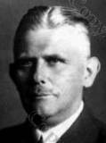

-
⇒ Fahle-Drosemeyer
|
Johann (Joseph) Ferdinand Fahle
gt. Krusenstoffels */~ Rüthen 30./31.5.1800 P: Ferdinand Fahle, Johannes Körting, Christina Henne + zw. 4.6.1851 (krank, lt. Brief s. Sohnes) u. 31.5.1859 (Tod s. Witwe) (in Rüthen: auch nurJohann oderJohann Joseph in Arnsberg:Johann Joseph oder nurJoseph ) in Recklingh. b. Heirat d. Sohns:Joh. Ferdinand nach frühem Tod seiner Eltern wohl bei seinem Patenonkel aufgewachsen; bis 1815 Schusterlehrling in Rüthen, 1817 Schustergeselle in Werl, 1822 oo in Arnsberg 1823-28 Taufe von 4 Kindern in Rüthen, 1827 "Bürger und Schuster" in Rüthen" 1833/35 Taufe von 2 Kindern in Arnsberg 1838 Fuhrmann Johann Joseph Fahle, Verk. Grundst. in Rüthen 1840 Fuhrmann in Arnsberg, 1840-43 Schankwirt u. Krämer in Arnsberg oo Arnsberg kath. 19.11.1822 "Schuster und angehender Bürger in Rüthen seit mehreren Jahren in Arnsberg lebend" Anna Maria Christina Severin */~ Kallenhardt 19./23.9.1795 E: Joannes Fridericus Severin 1747-1806 u. Anna Angela Margaretha Risse 1747-1821, aus Kallenhardt P.: Anna Angela Margaretha Risse (*1765), Joes Andreas Rüther, Anna Angela Christina Schulte + 31.5.1859 (verwitwet), [] Hamm 3.6.1859-
Johann Heinrich Joseph Fahle
*/~ Rüthen St.Nik. 17./19.8.1823, + Posen 13.4.1893
Studium Mathematik und Naturwissenschaften in Münster und Berlin;
1845/46 Probejahr am Gymnasium zu Arnsberg; dann Hilfslehrer
an Gymnasien zu Arnsberg, Recklinghausen und Paderborn;
1851 an die Realschule zu Attendorn, dort ordentlicher Lehrer;
1857 Versetzung nach Neustadt/Westpr., dort Oberlehrer und Prof.;
1873 an das Marien-Gymnasium zu Posen; 1892 Ruhestand
oo Attendorn kath. 29.1.1854
und Recklinghausen kath. 31.1.1854
Maria Anna Caspers
* Recklinghausen 15.2.1830, + 1906

ihre Eltern:
Wilhelm Caspers, Dr.phil.h.c.,
* Neuss 1797, + RE 1878
52 Jahre Lehrer, sp. Prof.,
am Gymn. Petrinum in RE,
1871 Ehrenbürger von RE;
oo 1828
Jenny Schulz 1808-1874;
-
Norbert Wilhelm Fahle
*/~ Attendorn kath 15./18.3.1855
+ Posen 5.6.1917
Rechtsanwanlt u. Notar, Justizrat
oo Bad Boll (Bonndorf) 19.7.1890
Anna Schuster
* 5.8.1865; + Obernigh/N.Schl. 6.6.1941
Tochter von
Carl Friedrich Schuster (1883-91) 1866-88 Bgm./OBgm. von Freiburg i.Br., 1867 Kauf des Kurorts Bad Boll (Bonndorf) 1869-72 M.d. Landtags, 1887-90 M.d. Deutschen Reichstags; Vater des Freiburger Architekten u. Malers Carl Schuster (1854-1925)
(keine Kinder) -
Clemens Joseph Fahle
*/~ Attendorn kath 5./7.9.1856
+ Schwiebus/Brandenburg 16.4.1933
Jurist, 1898-1903 M. d. Reichstags;
bis 1876 Königl. Gymnasien zu Neustadt und Posen
bis 1879 Studium der Rechtswissenschaften
in Greifswald und Berlin;
ab 1884 Rechtsanwalt, ab 1885 Notar;
langjähriger Stadtverordneter in Schwiebus,
Mitglied der Schuldeputation, Mitglied des
Kreistages und Stadtverordneten-Vorsteher.
oo 1885
Helene Schipke
* Schwiebus 20.8.1863, + 1941
-
Hans Fahle
* Schwiebus 1886,
+ 1934 (Autounfall)
Bankbeamter
oo 1913
Margarethe Klemmt
* Berlin 1891, + 19xx
Umzug nach Berlin
- Gertraud Fahle * 1915, Missionsdienst Kurt Fahle * 1916, Zechen-Angestellter, oo ... Dora Schlemmer * Redewitz 1919 Umzug nach Wetter/Ruhr; ein Sohn
- Margarethe Fahle * Schwiebus 1888, + 1905 (17 J.)
-
Hertha Fahle
* Schwiebus 15.1.1892
oo 1912
Kurt Reinhold Marggraff
* Schwiebus 25.11.1886
gründete nach 2. WK Tuchfabrik in Alpirsbach
(Schwarzwald)
Eltern:
Karl Gotthelf Marggraff (Schwiebus 1860-1931),
Anna Bertha Keller (Schwiebus 1866-?)
- 1. Liselotte Marggraff, * Schwiebus 1913, oo 1938 Walter Eckardt 2. Fritz Marggraf, * 1917, Inh. Tuchfabrik in Alpirsbach (+) oo 1944 Liselotte Draselmeyer 3. Martin Marggraff, 1922-1943, gefallen in Rußland
- Maria Fahle * Schwiebus 1893, + 1894
- Charlotte (Lotte) Susanne Fahle * Schwiebus 1902, + ... oo 1929 Rudolf Miehe, Dr.jur. * Peine 1898, + ... LG-Direktor in Braunschweig | (4 Kinder)
-
Hans Fahle
* Schwiebus 1886,
+ 1934 (Autounfall)
Bankbeamter
oo 1913
Margarethe Klemmt
* Berlin 1891, + 19xx
Umzug nach Berlin
- Maria Nathalia Josepha Hedwig Fahle */~ Neustadt/Westpr. kath 18.2./6.3.1858
-
Friedrich Alfred Eduard Fahle
*/~ Neustadt/Westpr. kath 8.1./15.2.1865
+ 27.10.1923 (an Kriegsfolgen)
Justizrat, Rechtsanwalt, Notar
oo 1865
Emma Lichel
* Konradswaldau/Kr.Brieg 1881, + 1951
Umzug nach Stargard
- Liselotte Fahle * Naugard/Pommern 1903 oo 1935 Karl Woller * 1905 Bundesbahn-Oberrat
- Heinrich Wilhelm Fahle */~ Neustadt/Westpr. kath 13.9./6.10.1866 Rechtsanwalt u. Notar in Lobsens/Posen
-
Maria (Mieze) Ferdinande Aurelie Fahle
* Neustadt/Westpr. 22.4.1868, + Freiburg/Br. 30.9.1946
oo 27.8.1892
Anton Frank
* Bauerwitz/O'Schlesien 7.9.1859, + Posen 1901
bis 1879 Gymnasium zu Leobschütz,
Studium Geschichte u. Philologie in Breslau u. Berlin,
1884 Lehramtsprüfung in Berlin,
1885-88 Lehrer an div. Schulen i. Prov. Posen
zuletzt Gymn.-Oberlehrer am Marien-Gymn. in Posen
3 Kinder: "Frank-Fahle"
-
Maria Frank-Fahle, Dr. med.
* Posen 31.10.1893, + 3.3.1955
Lungen-Fachärztin
in Freiburg/Br. - Antonia "Toni" Marg. Elis. Frank-Fahle * Posen 4.5.1895, + Freiburg/Br. 7.2.1956 oo ..., o|o ... Hermann Krönig, Dr. jur. Oberreg.Rat 1911 Referendar in Köln 1925-27 bei der Regierung Merseburg (Sachsen-Anhalt)
-
Günther Frank-Fahle, Dr. jur.

* Posen 18.2.1897, + Königstein 15.2.1981, [] Oberursel 1933-45 Direktor bei IG-Farben in Berlin, Zentrale Finanzverwaltung und Geheimdienstabteilung "NW7", 1937-45 Sekretär d. Kaufm. Ausschusses u. Vorsitzender div. Konferenzen; 1945 inhaftiert, 1947/48 Zeuge beim Nürnberger IG-Farben-Prozess; nach 1945 Geschäftsführer und neben Hermann-Josef Abs Mitinh. der Dt. Commerz GmbH, Vertretung von Lockheed ("Starfighter-Affäre"); oo 1938 Luise Selck * Oberursel 17.4.1917, + Frankfurt 2000
Tochter von Erwin Selck
* Preetz/Kr.Plön 1876, † Oberursel 1946
1926-36 im Vorstand der IG-Farben;
Hon.-Prof. an Univ. Ffm.;
SS-Hauptsturmführer,
1939 Kriegsteilnehmer,, 1945 interniert;
oo I. Cronberg 1913 Violet Louise Horley
* Southam Engl. 1882, + Oberursel 1926,
oo II. London 1928 Mabel Venables
* Nordirl. 1884, + Bournm. Engl.1964 | 3 Kinder:-
Roswitha Violet Luise Maria Frank-Fahle
* 1941/42
1947-51 Grundschule Oberursel,
1954-61 Gymnasium Heidelberg oo Oberursel 17.12.1968 Jean Abel Max Marie de Peyrelongue 6 Kinder 1969-77 -
Gottfried Frank-Fahle
* Juli 1945
Unternehmensberater, 1993 Direktor Minquest Ltd.
Patent 1984 (Oberursel)
- Constantin Frank-Fahle, Dr. * Frankfurt/M. 15.8.1981 Jurist oo ... Beatrice-Alizee Hina Marie Barbier Biologin
-
Roswitha Violet Luise Maria Frank-Fahle
* 1941/42
1947-51 Grundschule Oberursel,
-
Maria Frank-Fahle, Dr. med.
* Posen 31.10.1893, + 3.3.1955
Lungen-Fachärztin
-
Norbert Wilhelm Fahle
*/~ Attendorn kath 15./18.3.1855
+ Posen 5.6.1917
Rechtsanwanlt u. Notar, Justizrat
oo Bad Boll (Bonndorf) 19.7.1890
Anna Schuster
* 5.8.1865; + Obernigh/N.Schl. 6.6.1941
Tochter von
- Xaver Fahle */~ R.St.Joh. 17./19.1.1826 P: Xaver Becker + R.St.Joh. 8.2.1826
- Eva Dorothea Friederica Fahle */~ R.St.Joh. 22.5.1827 P: Friederica Becker, Francisca Severin, Franz Severin + R.St.Joh. 6.6.1827
-
Anton Fahle
*/~ R.St.Joh. 7./11.11.1828
P: Anton Schulte, Anton Severin, Maria Severin geb. Schulte
"16.10.1852 nach Neuenheerse"
oo I. Neuenheerse kath./Lichtenau ev. 23.1.1853
"Clara" Maria Tiecke (Tick)
oo II. Hamm/Arnsberg kath. 18./27.1.1866
Wilhelmine (Henriette) Muell
*/~ Arnsberg kath. 30.8./10.9.1835
E: Jos. Karl Muell, Henriette Wilhelmine Messmann
- Kinder aus I. oo: Franz Fahle */~ Ramsbeck St.Marg. 4./6.9.1854 + Hamm kath. 23.1.1864 (9|4|19) "Emma" Theresia Fahle */~ Ramsbeck St.Marg. 26./30.11.1856 +/[] Hamm Stkr. 5./7.9.1867 (10|9|10) "Heinrich" Joseph Fahle */~ Hamm kath. 22.10./6.11.1859 oo Mühlheim/Ruhr ev. 14.10.1884 Wilhelmine Schütte Franz Joseph Fahle */~ Hamm kath. 24.12.1861/2.2.1862 Joanna Theresia Clara Fahle */~ Hamm kath. 27.5./14.6.1863
- Kinder aus II. oo: Antonia Maria Anna Fahle */~ Hamm kath. 30.11./11.12.1866 +/[] Hamm Stkr. 1./4.5.1867 Ferdinand Hubert Fahle */~ Siegburg 16./23.6.1870 Hubert Joseph Carl Fahle */~ Siegburg 18./19.4.1872
- Theresia "Therese" Franziska Fahle */~ Arnsberg kath. 5./12.11.1833 in Ahlen verheiratet?
-
Carl Joseph Fahle
*/~ Arnsberg kath. 20.10./3.11.1835
+ Münster 28.3.1911 (76 J.)
seit 1863 Buchhändler in Münster;
1871 Herausgeber des "Münstersches Tageblatts",
1878 eigene Druckerei, Alter Fischmarkt 1,
(1887 Erwerb des Hülshoffschen Stadthofs)
1897 umbenannt in "Münstersche Zeitung";
nach 1903 Rückzug aus atkivem Geschäftsleben
und Übergabe an Sohn Clemens und Schwiegersöhne
Meurer und Hegemann;
1986 Übernahme der C.J. Fahle GmbH vom
Dortmunder Verlagshaus Lensing
oo Münster St.Ludgeri 23.6.1864
Pauline Krampe
Vater: Johann Gerhard Krampe
-
Johann Maria Joseph Fahle
*/~ Münster 15./18.5.1865
Elisabeth Maria Johanna Pauline Fahle
*/~ Münster 8./11.4.1867
oo vor 1899
Franz Meurer
Sanitätsrat
Wilhelmina Clementine
Marianne Maria Christine Fahle */~ Münster St.Lamb. 15./18.3.1869 oo ... Paul Hegemann, Dr. med. Sanitätsrat in Werne * Ascheberg 27.12.1865 + Werne 7.12.1919 -
Clemens Joseph Bernard Fahle
*/~ Münster St.Lamb. 9./12.1.1871
+ Münster 11.6.1939
Justizrat
Ende des 19.Jhdt. Abriß des Hülshoffschen
Stadthofs und Errichtung eines Neubaus
oo Rheine 12.8.1899
Victoriane Maria (Mimmi)
Franziska Theodora Wesselinck */~ Rheine 6./10.8.1874 Eltern: Kalkwerkbesitzer Johann Franz Joseph Wesselinck (*1843), Maria Francisca Hausmann, oo Rheine 1873 + Göttingen 3.10.1951- Pauline (Paula) Maria Franziska Fahle * Münster 6.4.1907
- Maria Josefa Fahle * Münster 15.3.1909 oo 6.12.1933 Georg Heinrich Johannes Erler, Dr. jur. * Münster 20.1.1905 + Göttingen 10.3.1981 Landgerichtsrat und Dozent an Univ. Münster, 1952 an Univ. Göttingen; ab 1933 Mitglied der NSDAP, div. Funktionen; Sohn des Geh. Regierungsrates Georg Erler und Anna Lehmann; Verfasser von "Die Vorfahrenschaft Erler-Fahle", Göttingen 1974 | 3 Kinder
- Karl Josef Alois Fahle * Münster 17.12.1911 + 30.3.1931 (19 J.)
- Elisabeth Caroline Pauline Fahle */~ Münster St.Lamb. 22./25.12.1872 + Münster 8.8.1897 (25 J.) Anna Fahle * Münster 21.4.1875 + Münster 5.3.1937 (61 J.)
-
Johann Maria Joseph Fahle
*/~ Münster 15./18.5.1865
Elisabeth Maria Johanna Pauline Fahle
*/~ Münster 8./11.4.1867
oo vor 1899
Franz Meurer
Sanitätsrat
Wilhelmina Clementine
-
Johann Heinrich Joseph Fahle
*/~ Rüthen St.Nik. 17./19.8.1823, + Posen 13.4.1893
Studium Mathematik und Naturwissenschaften in Münster und Berlin;
1845/46 Probejahr am Gymnasium zu Arnsberg; dann Hilfslehrer
an Gymnasien zu Arnsberg, Recklinghausen und Paderborn;
1851 an die Realschule zu Attendorn, dort ordentlicher Lehrer;
1857 Versetzung nach Neustadt/Westpr., dort Oberlehrer und Prof.;
1873 an das Marien-Gymnasium zu Posen; 1892 Ruhestand
oo Attendorn kath. 29.1.1854
und Recklinghausen kath. 31.1.1854
Maria Anna Caspers
* Recklinghausen 15.2.1830, + 1906